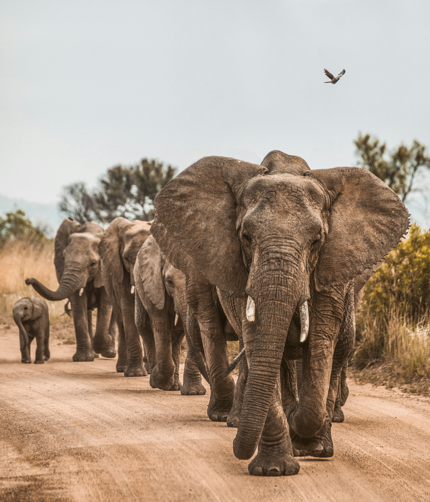
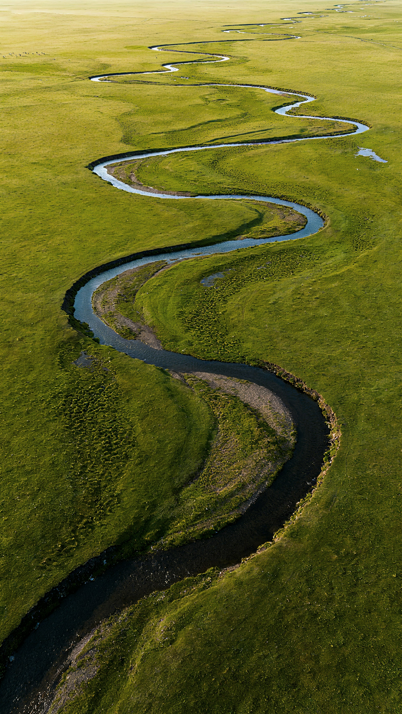
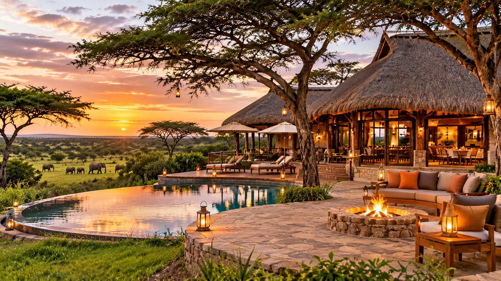

The Savannah Loop
Enjoy wide-open plains and spectacular wildlife viewing as you explore the beautiful African savannah.
View TrailDiscover the beauty of Kenya's wildlife and landscapes with our guided safari experiences.
Explore the breathtaking landscapes and diverse wildlife of Tsavo National Park. Our safari experiences are designed for nature lovers, families and adventure seekers.

Enjoy wide-open plains and spectacular wildlife viewing as you explore the beautiful African savannah.
View Trail
Discover the plants, birds and animals that thrive around rivers and natural water sources.
View Trail
Take in breathtaking views of the surrounding landscapes while enjoying an adventurous experience.
View TrailEnjoy opportunities to photograph Kenya's remarkable animals and scenery
Explore the park with knowledgeable guides who help you discover its wildlife and landscapes.

Plan a memorable stay with safari and accommodation options to suit your trip